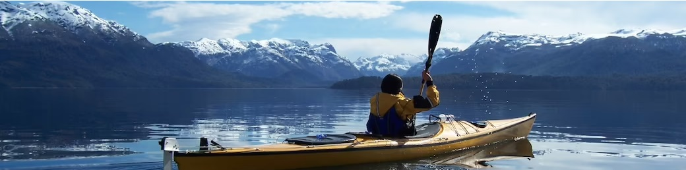

Inicio |
Productos |
Servicios |
Contacto
WILDTOUR
En Argentina, hay muchos lugares donde se pueden practicar deportes acuáticos como remo y vela en ríos y lagunas. Algunos de los lugares más populares son:
Chascomús
Delta del Paraná
Lago San Roque
Lago Nahuel Huapi
Ir arriba